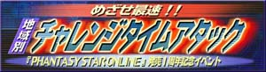

| 2002.1.31 |
|
WIN
|
【ＰＳＯ（Windows版）韓国発売開始のお知らせ】 |
お待たせ致しました！いよいよ、ＰＳＯ（Windows版）が２月２日（土）より、お隣の韓国にて発売されます。
新たに加わりました韓国語ワードセレクトを使って、韓国のＰＳＯユーザーとの言葉の壁を越えた冒険をお楽しみ下さい！
また、サーバーもいままでの日本サーバー（ＪＰ/Ｓｈｉｐ）に加え、２月２日（土）１３時頃より、韓国サーバー（ＫＲ/Ｓｈｉｐ）が稼動を開始する予定です。
こちらのサーバーも是非ご利用ください。
2002.1.31 ソニックチーム
|
| 2001.12.28 |
|
ＤＣ
|
【『めざせ最速！！地域別チャレンジタイムアタック』最終結果発表！】 |
ご好評頂いておりました『目指せ最速！！地域別チャレンジタイムアタック』にご応
募いただいたビデオの集計が終了、最終ランキングが確定いたしました！
予想を越える高記録が続々登場！！
イベントに参加された皆様もこれからチャレンジに挑戦しようと考えている皆様も是非
こちらをご覧下さい！
■『めざせ最速！！地域別タイムアタック』ＨＰ

また今回はムービーデータも最新版にリニューアルしました。
最速ハンターズの腕前をとくとご覧ください！！
【チャレンジイベント賞品発表のお知らせ】
昨日お知らせ致しました結果発表に続き、
優勝チームと各地域一位の皆さんへの賞品が
確定致しましたのでお知らせいたします。
※全ての入賞賞品は各メンバーに１セットずつ配送致します。
また賞品の配送は２００２年１月中を予定しております。
参加された皆さんお疲れ様でした!
入賞された方は賞品の到着をお楽しみに!
2001.12.28 ソニックチーム
|
| ■イベント終了のご挨拶
この度は『めざせ最速！！地域別チャレンジタイムアタック』にご参加頂き誠にありがとうございました。
今回のイベントを通じて新しい仲間が増えたという方もいらっしゃったようで一安心しております。また、その他にもたくさんの貴重なご意見を頂くことができ、開発者一同大変感謝しております。
今後も皆様がよりお楽しみいただけるような環境を目指して運営を行っていきますので、ご声援くださいますよう宜しくお願いいたします。 |
2001.12.27 ソニックチーム
|
| 2001.12.22 |
１２月２１日でDC版「ファンタシースターオンライン」の発売より、一周年がたちました。一日遅れてしまいましたが、ソニックチーム中裕司より、皆様への感謝のご挨拶を掲載させていただきます。
 みなさんこんにちは。 みなさんこんにちは。
ソニックチームの 中 裕司 です。
今日でDC版「ファンタシースターオンライン」が発売されて、丸一年が経ちました。
思えば、あっという間の一年間でした。
正直これほど続いていくとは、私自身も思っていませんでしたし、
この間、第５回日本ゲーム大賞を初めとした１６もの賞を頂くことができ、
「Ver,2」を発売して、「成長するゲーム」としてのPSOを実現することが出来たことは、ひとえに、毎日のプレイでPSOを支え、応援し続けて下さったユーザーの皆さんのおかげと思っております。本当にありがとうございました。
皆さんのPSOでの一年間はいかがだったでしょうか？
ラグオルでの多くの出会いの中で、普通のゲームではとても体験できないことを経験された方も多いと思います。
ひとつの嬉しい例として、こちらをご覧ください。
http://sega.jp/community/diary/（12月17日分）
セガのスタッフで、PSOをプレイされていた方が、ユーザーの方とご結婚をされることになりました。人生を変えてしまうようなこんな出会いにPSOがお手伝いを出来たことは本当に嬉しいことです。おめでとうございます。末永くお幸せに。
他にもいろんな方から、様々な出会いの報告を受けました。
こんな出会いがあることも、人と人とが繋がりあう、ネットワークゲームならではと思います。
そして、一周年を目前にした12月20日、「ファンタシースターオンライン」Windowｓ版が発売となり、「PSOワールド」は更なる広がりの第一歩を踏み出しました。
来年は多くの追加要素を加えたニンテンドーゲームキューブ版やXbox版が控えており、より多くの方に「PSO」を楽しんでいただき、少しでも多くの方にネットワークゲームの楽しさを味わっていただけたら、と思っています。
皆さん、この一年間本当にありがとうございます。
そしてこれからも、ソニックチームとファンタシースターオンラインをよろしくお願い致します。
(株）ソニックチーム 代表取締役社長 中 裕司
|
ソフトバンクパブリッシング株式会社様
「ぴーえすオ〜ファンタシースターオンラインファンブック」
（12月末発売）
株式会社宙出版様
「４コママンガ笑スタジアム ファンタシースターオンラインVer.２III」（12月24日発売）
の２冊の情報を掲載しました。
2001.12.22 ソニックチーム
|
| 2001.12.17 |
|
WIN
|
【『PSO』(Windows版)プレイアブルデモをUP!】 |
多くの皆様から要望をいただきました、『PHANTASY
STAR ONLINE』(Windows版)のプレイアブルデモを用意致しました。
設定されたキャラクターで、オフラインプレイの一部をお楽しみになることが可能です。（オンラインプレイはできません。ご了承ください。）
※注：本デモは製品版の動作保証を行うものではありません。あくまでも目安としてご利用ください。詳しくは使用許諾契約書をお読みください。
詳しくはこちらへ！

『PSO』For WindowsオフィシャルサポートHP2001.12.17 ソニックチーム |
| 2001.12.14 |
|
ＤＣ
|
【『ファンタシースターオンラインVer.2』が、第5回文化庁メディア芸術祭 審査委員会特別賞を受賞！】 |
「ファンタシースターオンラインVer.2」が、第5回文化庁メディア芸術祭審査委員会特別賞を受賞しました！
審査委員会特別賞は審査委員会により特に推薦された人物、作品等に贈呈される今年度より新設された賞です。
『文化庁メディア芸術祭』は、これらの作品の授賞式や作品展を含めて
2002年2月28日(木)〜3月10日(日)の間東京都写真美術館にて開催される予定です。
『文化庁メディア芸術祭』の詳細はこちら
この度の受賞で、『PSO』が受賞した国内外の賞は計16となりました。。
これらの受賞はひとえに、熱いご支持を頂きました多数のユーザーの皆様に支えられて獲得することができたものです。
本当にありがとうございました。
2001.12.14 ソニックチーム
|
| 2001.11.30 |
大変お待たせしました! 第３回・オフィシャルサポーターズリンクの更新をいたします。
今回は１１５サイトとのリンクを追加いたしました！ご協力していただいたサイトオーナーの皆様、ありがとうございました。また、閉鎖やリンク切れになっていたHPを整理させていただきました。
ＰＣ版・ＧＣ版を控え、ＤＣ版ＰＳＯはももうすぐ一周年、まだまだ衰えないファンの皆様の思いのこもった『PSO』ファンページの数々を是非ごらんください！
2001.11.30 ソニックチーム
|
| 2001.11.9 |
お待たせ致しました！ＴＧＳ２００１秋にて公開されたニンテンドーゲームキューブ版
『ＰＳＯ』の最新情報をお届けします!更に進化した『ＰＳＯ』をご覧ください!
もちろんムービーもあります！
オフィシャルページの整理、統合のため、『ＰＳＯワールド』『ムービーギャラリー』のページを新設しました。
『ＰＳＯワールド』のページでは各プラットフォームで発売された（または発売予定の）
『ＰＳＯ』のデータをまとめ、各紹介ページへのリンクをしました。
また、これまで『ＰＳＯ』が受賞した各賞も掲載致しました。
『ムービーギャラリー』のページにはゲームキューブ版の映像を含めた、これまで公開されたムービーをまとめました。順番に見ていくと、『ＰＳＯ』の変遷がよくわかりますよ！
2001.11.9 ソニックチーム
|
| 2001.11.2 |
|
ＤＣ
|
【第２回ファミ通CUP抽選結果発表と１億PT完走イベントのお知らせ！】 |
■ファミ通CUP抽選結果発表！！
大盛況のうちに終了した「第２回 ＰＳＯファン感謝祭
ファミ通ＣＵＰ -Maximum Attack-」の賞品抽選が終了いたしました。
確認ページはこちらです。↓
http://pso.sonic.isao.net/psov2/event_present_01.html
2001.11.2 ソニックチーム
|
| 2001.10.29 |
|
ＤＣ
|
【「第２回 ＰＳＯファン感謝祭
ファミ通ＣＵＰ -Maximum Attack-」登録終了！】 |
１０月２８日２４：００をもちまして、「第２回 ＰＳＯファン感謝祭
ファミ通ＣＵＰ -Maximum Attack-」の登録を終了させていただきました。ハンターズの皆様、沢山の登録本当にありがとうございました!
（株）ソニックチーム代表取締役社長 中裕司と、（株）エンターブレイン代表取締役社長
浜村弘一様より、イベント終了のご挨拶を掲載させていただきます。
(株）ソニックチーム 代表取締役社長
中 裕司
|
みなさん
こんにちは。
ソニックチームの 中 裕司 です。
第２回ファミ通ＣＵＰ-Maximu Attack-の登録が先ほど終了しました。
当初は目標値を何ポイントにしようか迷っていたのですが、これほど登録いただけたことに開発者一同驚いております。
イベントは全体を通して大変な盛り上がりを見せることができ、これも皆様の御協力のおかげであり大変感謝しています。
みなさん、これからも「ファンタシースターオンライン」を応援してくださいね！ |
（株）エンターブレイン代表取締役社長
週刊ファミ通編集長
浜村 弘一
|
 ファミ通の浜村です。 ファミ通の浜村です。
一億ポイント達成なんて、とっても達成不可能な数字かと、個人的には思っていたのですが……。
ＰＳＯファンの愛と努力に感動しました！ その熱意に深く敬意を表する意味でも、ぜひまた機会を作って、なにか企画を催したいですね。
これからもＰＳＯ同様、ファミ通もよろしくお願いします！ |
合わせて今回のイベントを担当しました、ＰＳＯチームクエスト班よりの皆様へのお礼の言葉も掲載させていただきます。
|
ＰＳＯチームクエスト班
|
| ハンターズの皆様。本当にお疲れ様でした。
そしてこれほどまでたくさんのご登録をいただき、本当に感謝しております。
今回のイベントはユーザーの皆様全員が協力することで、更なる思い出を作って頂こうということを目標に制作を行いました。
イベントを盛り上げるためにファミ通編集部の方々にご協力を頂き、イベントの告知やロビーイベントを開催して頂いたこともありました。
また、クエストをマイナーチェンジしたりさまざまなギミックを入れたりしたこともありました。
正直、登録数が少ないまま終わってしまうのでは？という不安が常に付きまといました。
しかし終わってみれば予想をはるかに越える登録数を記録することができ、オンラインゲームの新たな歴史が刻むことができたと考えています。
このイベントで学んだことを生かして今後のクエスト制作を行っていきたいと思います。
今回のイベントに協力してくださいましたユーザーの皆様、関係者の皆様、本当にありがとうございました。 |
■その他のお知らせ
景品の抽選に関しましては１０月２８日２４：００の段階で表示されていたもののみ対象とさせていただきます。
■思い出リンク
イベントに参加して下さったハンターズの皆様、本当にありがとうございました！
2001.10.29 ソニックチーム
|
| 2001.9.12 |
【PC版「ファンタシースターオンライン」発表!!】
【ＰＳＯ関連書籍情報を更新しました！】
宙出版様
「ゲームアンソロジー Welcome to ファンタシースターオンラインVer.２」（発売中）
「４コママンガ笑スタジアム ファンタシースターオンラインVer.２」（発売中）
の２冊の情報を掲載しました。
【「第３弾
面白エピソード大募集」結果発表
＆「マッキンリーへの道」】
またまたお待たせいたしました！
「第３弾 面白エピソード大募集」の結果発表です！
また今回更に、週刊ファミ通誌上でも紹介されました、北米最高峰マッキンリーに挑戦したＰＳＯユーザー、田中さんと佐藤さんの登頂までの足跡をたどった
レポートをお二人のご厚意により、作成しました。
面白エピソード特別編として、こちらも是非ご覧ください！2001.9.12
ソニックチーム |
| 2001.6.29 |
【ＰＳＯ関連書籍情報を更新しました！】
ソフトバンク様
「ファンタシースターオンラインVer.２ パーフェクトガイド」（発売中）
角川書店様
「スニーカー文庫 ファンタシースターオンライン
(２)闇の因子」
（７月１日発売予定）
の２冊の情報を掲載しました。 |
| 2001.6.18 |
【PSO・オフィシャルサポーターズリンク更新のお知らせ】
大変お待たせしました! 第２回・オフィシャルサポーターズリンクの更新をいたします。
今回はなんと一気に１７７サイトとのリンクを追加いたしました！
ファンの皆様の熱い思いのこもった『PSO』ファンページの数々を是非ごらんください！2001.6.18
ソニックチーム |
| 2001.6.13 |
【ミーティングBBSの閉鎖および利用規約変更について】
PSO・ミーティングBBSにおきまして、不正プレイヤーがアイテムの配布行為を行っている事実が確認されました。
このままでは通常プレイを行っていただいております、ユーザーの皆様への影響が大きいと判断し、
６月１５日午前１０時３０分を持ちましてミーティングBBSを閉鎖させていただきました。
不特定多数のユーザーの皆様の交流の場として、大変にぎわっておりましたミーティングBBSをこのような理由で閉鎖しなければならないことは本当に残念です。
プレイヤーの皆様には重ねて、正規の方法でのプレイをお願いするとともに、不正ユーザーの排除にご協力をお願い申し上げます。
また近日、フリー、シークレット両BBSでの不正行為に関する論争等の発言が目立っておりますが、BBSはユーザーの皆様の交流の場として用意させていただいております。
これらの発言は、BBS本来の趣旨とはまったくかけ離れたものでありますので、誠に勝手ながら、
本日６／１３より、BBSにおける不正行為に関する発言を一切禁止させていただきます。
この規約に違反した方は、申し訳ありませんが、BBSのご利用を即時停止いたします。
今後、不正行為に関するご意見、情報等はソニックチーム宛に直接メールしていただく様、お願い申し上げます。
ユーザーのみなさまのご理解をお願いいたします。
2001.6.13 ソニックチーム
|
| 2001.5.24 |
【株式会社ＩＳＡＯからのお知らせ・ＰＳＯコース】
ＰＳＯをいつまでも楽しみたい！そんなあなたにはこれをオススメします!！
接続料とハンターズライセンスがセットになった新コースのご案内です。
■ＰＳＯコース（定額ゲームコース）■
 <詳しくはこちらをごらんください！ <詳しくはこちらをごらんください！
『定額ゲームコース』とはイサオへの接続料金とゲームの利用権がセットになった料金コースの総称です。１度コースに申し込みされますと、それ以降は毎月自動で利用権の購入が行われます。
そのため、ご利用のたびに利用権の購入を行う必要がございません。
『 PSOコース』とは定額ゲームコースの中の1つで、『ファンタシースターオンライン』の
『ハンターズライセンス』（ＰＳＯ利用権）がセット対象となります。
そのためインターネットはもちろん、ファンタシースターのオンラインプレイを思いっきり
楽しみたい方に大変お奨めのコースです。 |
| 2001.5.2 |
【「ファンタシースターオンライン
Ｖｅｒ．２」最新情報!!】

今回はチャレンジモードの紹介や製品についての皆さんの疑問にお答えするコーナーに加え、来場できなかった皆様のために、「GameJam
in ZeppTokyo」で公開した 「PSO Ver.2」のムービーを掲載しました！（DCでもムービーをご覧になれますよ!!）
【第１次、第２次「面白エピソード募集」結果発表！
】
ずいぶん長い間お待たせすることになってしまい、本当にゴメンナサイ！
トライアル期間〜製品版の発売後一週間に募集しました、「面白エピソード大募集」の結果発表です！ |
| 2001.4.25 |
【『ＰＳＯ』コミック本発売のお知らせ】
宙出版様から４コママンガ集が発売されました！
PSOプレイヤーなら思わず笑ってしまうような小ネタが満載された一冊です。
お近くの書店で是非お買い求め下さい！ |
| 2001.3.30 |
『ファンタシースターオンライン』が
第5回 日本ゲーム大賞を受賞しました！ |
| 2001.3.2 |
 海外サイト翻訳サービスはじめました！ 海外サイト翻訳サービスはじめました！
エキサイト(株）様のご協力により、海外の公式サイトや情報サイト、今後増えてくるであろう海外ユーザーサイトの翻訳サービスを開始致します。ＰＳＯの知り合った海外のプレイヤーとの交流の一助となれば幸いです。
今回はまず米欧公式サイトへのリンクのみですが、今後海外ユーザーからもオフィシャルサポーターズを募集し、海外と日本のユーザーが相互に翻訳サイトを利用することで、ＨＰにおいても、国境を越えたコミュニケーションを実現していく予定ですので、ご期待ください！
『ＰＳＯ』関連商品のコーナーはじめました。
攻略本やサントラなど関連商品をまとめてご紹介するコーナーを作りました。なかなか見つからないという方は是非注文の参考にしてくださいね!
いよいよ発売される設定資料集や小説版の情報も載せています! |
| 2001.2.6 |
【PSO・オフィシャルサポーターズリンク】を公開！！
お待たせしました! いよいよ、ファンの皆様の熱い思いのこもった『PSO』ファンページとのリンクを公開いたします!今後もリンクは続々ふえる予定です！
我こそは、と思うPSOサポーターズの方は是非ソニックチームまでメールを！ |
| 2001.1.20 |
｢PSO・サウンドトラック発売のお知らせ｣を掲載しました！ |
| 2000.12.29 |
【PSO・ビジュアルBBS正式運用開始しました！】

上のバナーをクリックして下さい。
Produced by ISAO Corp
|
| 2000.12.21 |

「PSO・オンラインサポートＨＰ」がオープンしました!
ダウンロードやイベントなど製品をお持ちの方への情報はこちらに掲載されます。

「PSOサウンドチームＨＰ」がオープンしました!
サントラの情報やPSOの音楽の制作秘話はこちらで！
製品版発売に伴い、BBSを３つに増設しました！
書き込みの内容にあわせて使い分けて下さるようにお願いします。
「ブロードバンドアダプタへの正式対応について」を掲載しました！
「各地のPSO看板」大阪の画像を追加掲載しました。
PSOの世界「マグとフォトンミラージュについて」を掲載しました!
|
| 2000.12.13 |
「TVCM第一弾のムービー」と
「各地のPSO看板」の画像を掲載しました。 |
| 2000.12.07 |
「ファンタシースターオンライン」発売記念イベント
「ソニックチームファン感謝祭」＆
「サンバ DE アミーゴ ver.2000」
ラジオ番組公開録音イベントの開催のご案内を掲載しました。 |
| 2000.12.01 |
「ドッグタグのサンプル画像」と
「製品版のジャケット」を掲載しました。 |
| 2000.11.15 |
「限定10万人予約キャンペーンのお知らせ」
を掲載しました！ |
| 2000.11.13 |
「ネットワークプレイ利用料金についてのお知らせ」
を掲載しました！ |
| 2000.11.10 |
「ファンタシースターオンライン」著作物利用規約を掲載しました！
「トライアル版の参加者の皆様へのお願い」を掲載しました！
「モンスター紹介」坑道で出会うモンスターを紹介!
「ステージ紹介」坑道面を公開！
「シティについて」シティの詳細を公開！
「PSOフォントダウンロードサービス」を開始しました！ |
| 2000.10.27 |
「限定版についてのお知らせ」を掲載しました。 |
| 2000.10.20 |
「キャラクター紹介」全９キャラクターを公開！
「ゲーム序盤のモンスター」森、洞窟で出会うモンスターを紹介!
「ステージ紹介」森林面、洞窟面を公開！
「特報」に初回特典の「SONIC
ADVENTURE２」体験版についての情報、
ネットワークトライアル版の発送時期などを追加掲載しました。 |
| 2000.9.30 |
「ファンタシースターオンラインBBS」が開設されました。 |
| 2000.9.22 |
「発売日、価格、ネットワーク接続方法について」
「ゲーム序盤の流れ」
「キャラクタークリエイトシステム」
「ゲーム序盤の武器」についてのコンテンツを追加しました! |
| 2000.8.11 |
「Phantasy Star Online」オフィシャルページリニューアル！
今後もコンテンツは拡張していきます。お楽しみに!! |